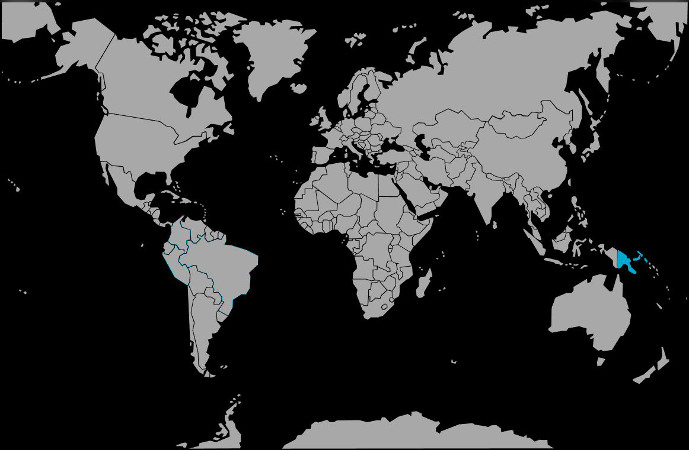

Systématique
- Ordre : Atheriniformes
- Famille : Pseudomugilidae
- Genre : Pseudomugil
- Espèce : Pseudomugil connieae
Pseudomugil connieae est un petit poisson arc‑en‑ciel à yeux bleus, originaire de Papouasie‑Nouvelle‑Guinée.
Les adultes atteignent environ 3–4 cm et vivent en banc serré, principalement en zone médiane et supérieure.
L’espèce forme des groupes dynamiques où les mâles paradent fréquemment, exhibant leurs nageoires étendues face aux femelles et aux rivaux.
Un maintien en banc d’au moins une dizaine d’individus dans un bac calme, bien planté et bien oxygéné permet d’observer pleinement ce comportement.
Mode : ovipare ; la ponte a lieu quotidiennement en petites quantités sur les plantes fines ou des mops, sans soins parentaux.
Les œufs peuvent être prélevés pour incubation séparée, ou laissés en bac spécifique très planté pour permettre la survie d’une partie des alevins.
Dimorphisme sexuel : mâles plus colorés, présentant des nageoires dorsales et anales plus développées ; femelles plus discrètes, aux nageoires plus courtes.
Espérance de vie : en moyenne 2 à 3 ans en aquarium, dans une eau stable et bien oxygénée.
L’espèce fréquente de petits cours d’eau tropicaux, clairs à légèrement ambrés, avec une végétation aquatique et ripicole abondante et un courant léger.
Répartition
Origine naturelle :
- Papouasie‑Nouvelle‑Guinée.
- Rivières et ruisseaux tropicaux à faible profondeur.
Les milieux sont bien oxygénés et souvent très lumineux, avec un courant léger et un substrat généralement sableux ou graveleux.
Paramètres de maintenance
Température : 22 à 27 °C.
pH : 6,0 à 7,5.
GH : 3 à 12 °dGH.
Courant : léger, avec une bonne oxygénation.
Volume conseillé : à partir de 80 L pour un groupe d’au moins 10 individus.
Régime alimentaire
Régime : omnivore à tendance insectivore ; apprécie les micro‑nourritures vivantes et congelées (daphnies, artémias, microvers), ainsi que les micro‑granulés de bonne qualité.
Une alimentation variée et de petite taille favorise des couleurs intenses, une bonne condition et stimule la reproduction.